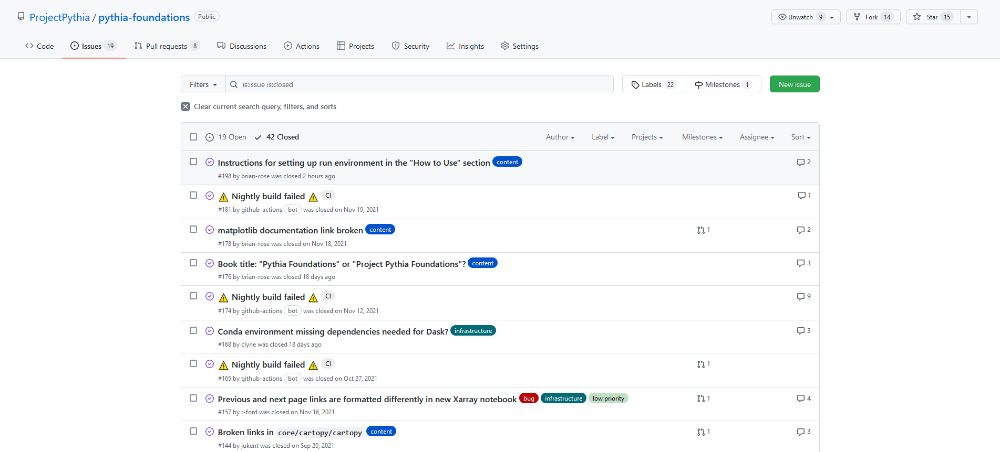
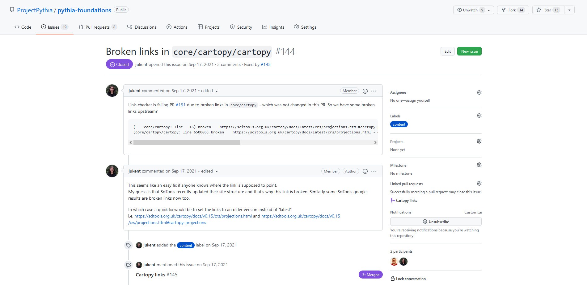

Issues and Discussions
What are Issues and Discussions?
GitHub provides two different, but related mechanisms for communicating within a repository about a project: Issues and Discussions. Issues are more like “todo” items; they are task-focused. For example, Issues are often used to report and track bugs, request new features, or perhaps note a performance problem. Ultimately, the maintainers of a project may resolve the issue by fixing the bug, adding the feature, etc., and then closing the resolved issue, marking the task as completed. GitHub Discussions, much like the name implies, are more open ended, and may not have a resolution. Asking about a topic, discussing the merits of a new feature, or even advertising an event, such as a tutorial for your project, are all examples of Discussions.
In the text below we discuss Issues in more detail, followed by a discussion on Discussions. Keep in mind that when initiating a conversation on GitHub, it is often unclear whether something is more suited as an Issue or a Discussion. We, the creators of Project Pythia, struggle with this ourselves. If you’re not sure, simply pick one. Fortunately, the GitHub developers recognized this dilemma, and made it easy to convert Issues into Discussions and vice versa.
Issues
To get started, let’s take a look at the Issues page in Project Pythia’s pythia-foundations repository:
By default, it shows all open Issues, but we can see all closed Issues by clicking “Closed”.
Issues, Discussions, and Pull Requests are all numbered for easy reference. By opening, resolving, and then closing an issue, we are leaving behind a searchable public record of what the issue was, why we thought it was important, and how we resolved it. This is great for project management, since it gets old Issues out of the way without actually deleting them.
Let’s now examine Issue #144.
As you can see, some broken links were found in one of the Pythia Foundations tutorials, likely because the site being linked recently had its structure changed. An additional comment was added, as well as a label to help filtering/sorting Issues by topic. We then see that this issue was mentioned (by typing the issue number) elsewhere in the repository. In this case, it was mentioned in Pull Request #145, which makes the changes to fix the issue. We can also see that the PR has been merged, which means the changes have been incorporated into the main branch of the code.
Like this example, Issues can notify others of bugs or typos, but they can also be used as “calls to action”, whether you plan on addressing the issue yourself, or are hoping that someone else will be interested in making the changes. Issues #97 and #98 are examples of this, in which ideas for changes are proposed and then addressed at a later time.
A new issue can be opened by pressing the “New issue” button on the top right of the Issues page. Depending on the repository, you may be prompted to choose from a template, or you may just see title and text boxes to fill out.
Discussions
Discussions, on the other hand, are more open-ended and do not necessarily suggest a change or addition to the repository. Here is the Discussions page for Pythia Foundations:

Let’s take a look at Discussion #156.

This discussion brings up a resource relevant to the repository that could help others, but it is not suggesting a change like an issue would. Other Discussions might include announcements, Q&A, or general thoughts about the repository.
GitHub also makes it simple to reference a Discussion in an Issue (and vice versa), which can help provide background and context for a piece of work.
Summary
GitHub provides Issues and Discussions to facilitate collaboration.
Issues are specific and actionable, while Discussions are open-ended.
If you want to discuss a topic and you’re not sure if it is an Issue or a Discussion, just pick one. It will be okay. :-)